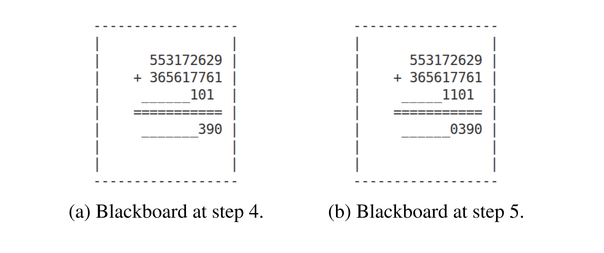

Overview
This project explores whether transformer models can learn structured reasoning through an explicit 2D blackboard representation. The goal is to investigate alternative approaches to reasoning in which intermediate states are stored and updated in a spatial workspace rather than being represented only as a sequential chain of tokens.
The project implements and evaluates transformer-based architectures that operate on a two-dimensional blackboard, allowing models to iteratively read from and write to structured representations. This setup provides a framework for studying how neural networks can perform multi-step reasoning and maintain intermediate information during problem solving.
Features
- Transformer architecture operating on a 2D blackboard representation
- Iterative reasoning through structured intermediate states
- Experiments on learning and evaluating spatial reasoning capabilities

Technologies
- Python
- PyTorch
- Transformer architectures
Source Code
The complete source code is publicly available on GitHub:

View source code
Explore the implementation, documentation, and experiments.
Results
The project demonstrates a framework for investigating how transformers can perform reasoning using explicit, persistent intermediate representations. A central challenge was designing an architecture that can effectively update and utilize a structured workspace while preserving relevant information across multiple reasoning steps.
The project provided practical insights into transformer-based reasoning, neural representations of structured information, and the challenges involved in building models capable of more interpretable multi-step computation.